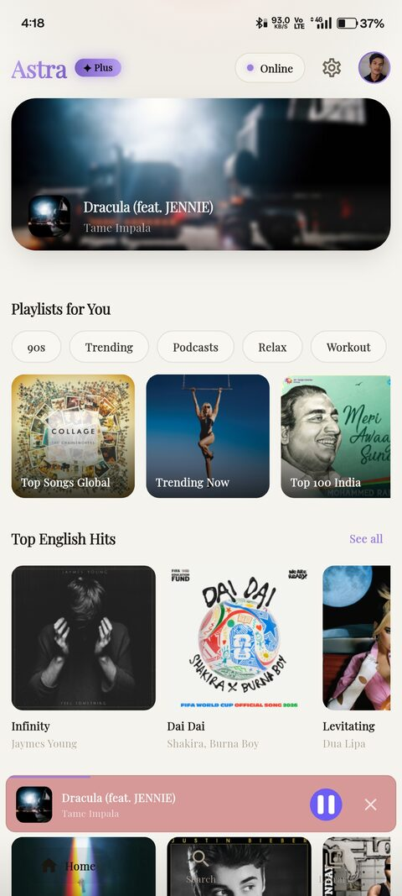
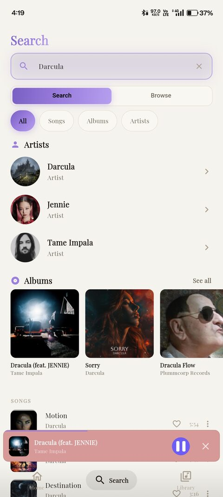
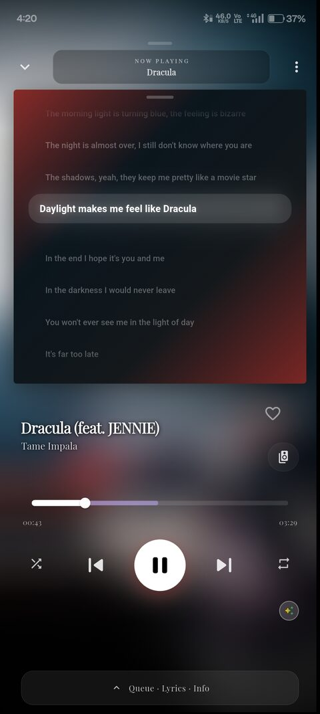
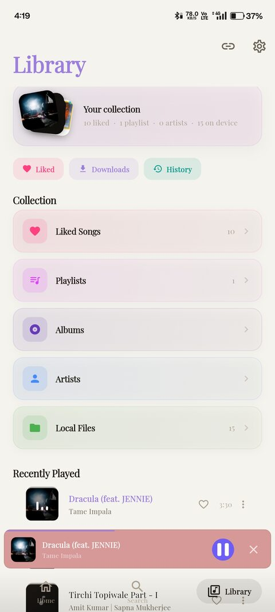

Clean library
Keep playlists, favorites and your music collection easy to reach.
A clean, focused music player made to keep your library, discovery and listening experience in one calm place.

MADE FOR LISTENING
Astra keeps the important things close: your music, your search, your player and your personal library.
02 · FEATURES
A focused set of tools that stays useful without turning the interface into a dashboard.
Keep playlists, favorites and your music collection easy to reach.
Find songs, artists and albums without unnecessary clutter.
Playback controls and queue stay close when you need them.
A responsive experience shaped around the way Android users navigate.
Simple choices, familiar controls and a layout that stays out of your way.
03 · THE APP
Real app screens, shown only where they add context. No oversized gallery, no repeated mockups.



04 · THE FEEL
Every screen is meant to feel familiar quickly. The goal is not to show more — it is to make the things you already want to do feel easier.
Important actions stay visible without competing for attention.
Small transitions give the interface life while keeping it calm.
Each area has a purpose, so the app stays easy to understand.
05 · ASTRA MUSIC
Get the latest Android build and experience Astra for yourself.
Download APK ↓ Android · APK06 · QUESTIONS
Astra Music is free to download and use.
Use the Download APK button on this page to get the current Android build.
You can use the app according to the features available in the current build.
Check the current release information before installing the latest build.